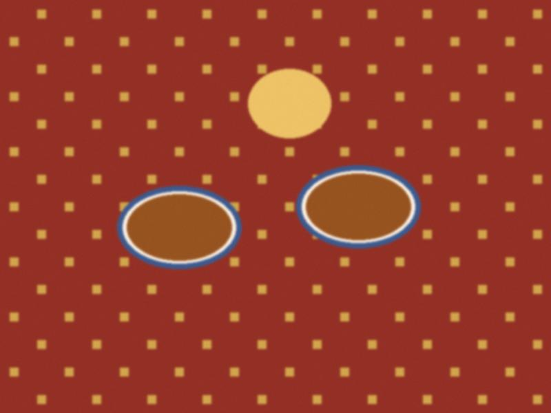

The nurses
14 February 2016 · nights

Tea in the nurses' room. I am allowed in on Tuesdays.Nobody writes about the nurses. In Irad half the hospital is nurses, they have the real knowledge, and they are paid like they are secretaries. Many go to Russia or the USA after three or four years. This year four left from our floor.
The head of the nurses' association (no name, she would be furious) has a saying: "the doctor is the sentence, the nurse is the paragraph". I tried to explain it to my father, he did not get it. I think it means that the doctor says "do this" and the nurse is the one who does it, and does it, and does it.
2 Comments
this is a beautiful sentence. sorry paragraph. can i print it?
Print. No name, please!
Comments are closed.